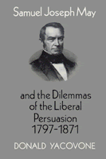

Samuel Joseph May rejected his upbringing to become a central figure in the antislavery and antebellum reform movements
Samuel Joseph May rejected his upbringing to become a central figure in the antislavery and antebellum reform movements


 Samuel Joseph May rejected his upbringing to become a central figure in the antislavery and antebellum reform movements
Samuel Joseph May rejected his upbringing to become a central figure in the antislavery and antebellum reform movements

|  |
Samuel Joseph May and the Dilemmas of the Liberal Persuasion, 1797-1871Donald Yacovonecloth EAN: 978-0-87722-760-1 (ISBN: 0-87722-760-8) |
"Yacovone�s able and useful biography will gain attention not only as the first real biography of May but also as one that portrays him with sensitivity and elucidates his thought in relation to his times and compatriots in reform."
—Robert Abzug, University of Texas at Austin
Born into Boston�s elite and trained at Harvard University as a Unitarian minister, Samuel Joseph May rejected his upbringing to become a central figure in the antislavery and antebellum reform movements. With this intellectual biography, Donald Yacovone has written the first modern account of May�s life. May�s friendships with William Ellery Channing, William Lloyd Garrison, and Ralph Waldo Emerson, and his work in the major crusades of his era make his life a virtual history of antebellum religion and reform. Though his ideals threatened his clerical career and his family relationships, he feverishly devoted his life to the abolitionist, peace, and temperance movements, education reform, and women�s rights.
The Liberal Persuasion was an intellectual movement that arose out of New England during the golden age of the Unitarian faith. May was the leading representative of this humanist ideology that rejected slavery and racial prejudice, advanced free religious inquiry, promoted republicanism and a generous interpretation of civil liberties, supported the emancipation of women, and defended the social and political rights of the working classes.
"Donald Yacovone's biography of Samuel Joseph May is a most impressive work: gracefully written, thoroughly researched, thoughtful in its conclusions and its consciousness of the debates not only of May's day but also among historians in our own. Yacovone's discussion of May's relationship with American Unitarianism represents a real contribution to our understanding of American religion in the antebellum period. This book is on the cutting edge of what promises to be an important new direction in religious history of the United States."
—Thomas D. Hamm, Earlham College
Acknowledgments
Introduction
1. A Boston Childhood
2. Brooklyn: Sheep among the Wolves
3. Unitarian Perfectionism and Liberal Reform
4. A Canterbury Tale: Colonization v. Immediatism
5. The Liberal Response: 1833-1842
6. Unitarianism and Reform, the Crisis Years: 1840-1845
7. Abolitionism and the Language of Fraternal Love
8. Abolitionism and the Problem of Patricide
9. Women's Rights, Economics, and Liberal Reform
10. War, Politics, and the Fugitive Slave Law Controversy
11. The Jerry Rescue and the Dilemma of Liberal Reform
12. The Pattering of Rain Before the Hurricane
13. War and the Struggle for Equality
Afterword
Notes
Select Bibliography
Index
 | Donald Yacovone is a Research Associate at the Black Abolitionist Papers Project, Florida State University. |
American Studies
Biography/Memoir/Autobiography
African American Studies
© 2015 Temple University. All Rights Reserved. This page: http://www.temple.edu/tempress/titles/787_reg.html.